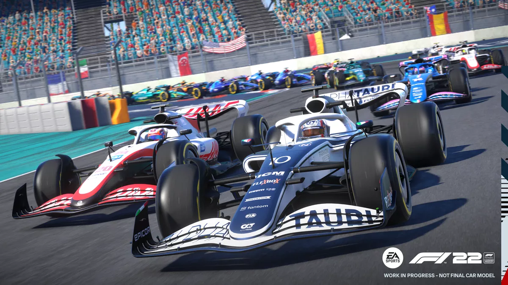

Campeonato Mundial de Fórmula 1 2022

O Campeonato Mundial de Fórmula 1 da FIA de 2022 foi a 73ª temporada do Campeonato Mundial de Fórmula 1, que é
reconhecido pela Federação Internacional de Automobilismo (FIA), o órgão regulador do automobilismo
internacional, como a mais alta categoria de competição para carros de corrida monopostos. O campeonato foi
disputado em 22 etapas, tendo iniciado no Barém, em 20 de março, e terminado nos Emirados Árabes Unidos, em 20
de novembro. Nesta temporada ocorreu a estreia do Grande Prêmio de Miami, realizado no Autódromo Internacional
de Miami. Equipes e pilotos competiram para serem campeões mundiais de construtores e de pilotos,
respectivamente.
Na temporada de 2022 foi introduzido mudanças significativas nos regulamentos técnicos do esporte.
Originalmente, essas mudanças deveriam ser introduzidas em 2021, mas foram adiadas para 2022 em resposta ao
impacto da pandemia de COVID-19.
Pilotos presentes no top 3 da corrida
Max Verstappen
Max Emilian Verstappen (Hasselt, 30 de setembro de 1997) é um automobilista neerlandês. Ele é piloto de
Fórmula 1 desde 2015, tendo feito sua estreia pela equipe Toro Rosso. Foi duas vezes campeão da Fórmula 1 em
2021 e 2022, e terminou em terceiro lugar em 2019 e 2020 com a Red Bull Racing, equipe pela qual corre desde
2016. É o piloto mais jovem a liderar uma volta durante um Grande Prêmio de Fórmula 1, o mais jovem vencedor de
um Grande Prêmio (18 anos 7 meses e 15 dias no Grande Prêmio da Espanha de 2016), o mais jovem a alcançar o
recorde de volta mais rápida no Grande Prêmio do Brasil de 2016, o piloto mais jovem a alcançar o recorde de
voltas em uma sessão, este foi o terceiro treino livre no Autódromo Hermanos Rodríguez (México) em 28 de outubro
de 2017 e o piloto mais jovem a competir na história desta categoria, como ele fez sua estreia com 17 anos e 166
dias no Grande Prêmio da Austrália de 2015 para a equipe Scuderia Toro Rosso, assim como o primeiro piloto de
nacionalidade neerlandesa a subir para o lugar mais alto do pódio da F-1.
Charles Leclerc
Filho de Hervé Leclerc, um ex-piloto, e Pascale, uma cabelereira, Charles é o segundo de três irmãos, que também
incluem Lorenzo, o primogênito, que gerencia sua carreira, e o caçula Arthur, também piloto. Sua família era
muito próxima de Jules Bianchi, que figurava como amigo, padrinho e mentor do jovem piloto. A perda deste em
2015, juntamente com a morte de seu pai em 2017 e a de seu amigo e contemporâneo Anthoine Hubert em 2019,
marcaram profundamente a vida de Charles. Ainda assim, ele seguiu na busca por seu sonho de correr na Fórmula 1.
Sergio Pérez
No dia 4 de outubro de 2010, a equipe Sauber anunciou o mexicano como piloto titular para a temporada de 2011 da
Fórmula 1. Em 2011, durante o Grande Prêmio da Espanha, Pérez marcou os primeiros pontos na categoria, ao chegar
na nona posição.
No treino classificatório do GP De Mônaco de 2011, ele perdeu o controle do carro após sair do túnel e depois de
tocar o guard-rail, bateu fortemente contra o muro de proteção. O piloto mexicano chegou a perder a consciência
e foi levado para o hospital, onde foram constatados uma fratura na perna esquerda e uma concussão. Com o
acidente, o piloto não largou em Mônaco e ficou fora também da etapa seguinte, no Canadá, sendo substituído por
Pedro de la Rosa.
Aqui estão listadas todas as equipes que participam deste evento
Alfa Romeo F1 Team Orlen
Scuderia AlphaTauri
BWT Alpine F1 Team
Aston Martin Aramco Cognizant F1 Team
Scuderia Ferrari
Haas F1 Team
McLaren F1 Team
Mercedes-AMG Petronas F1 Team
Oracle Red Bull Racing
Williams Racing
Histórico de vitorias F1
Campeões anteriores da F1:
| Datas |
Corredores |
Equipes |
2022 |
Max Verstappen |
Red Bull |
| 2021 |
Max Verstappen |
Red Bull |
2020 |
Lewis Hamilton |
Mercedes |
| 2019 |
Lewis Hamilton |
Mercedes |
2018 |
Lewis Hamilton |
Mercedes |
| 2017 |
Lewis Hamilton |
Mercedes |
2016 |
Nico Rosberg |
Mercedes |
| 2015 |
Lewis Hamilton |
Mercedes |
| 2014 |
Lewis Hamilton |
Mercedes |
| 2013 |
Sebastian Vettel |
Red Bull |
| 2012 |
Sebastian Vettel |
Red Bull |
| 2011 |
Sebastian Vettel |
Red Bull |
| 2010 |
Sebastian Vettel |
Red Bull |
| 2009 |
Jenson Button |
Brawn |
| 2008 |
Lewis Hamilton |
McLaren |
| 2007 |
Kimi Räikkönen |
Ferrari |
| 2006 |
Fernando Alonso |
Renault |
| 2005 |
Fernando Alonso |
Renault |
| 2004 |
Michael Schumacher |
Ferrari |
| 2003 |
Michael Schumacher |
Ferrari |
| 2002 |
Michael Schumacher |
Ferrari |
| 2001 |
Michael Schumacher |
Ferrari |
| 2000 |
Michael Schumacher |
Ferrari |
Referências...
Wikipedia
motorsport.com
EAgames